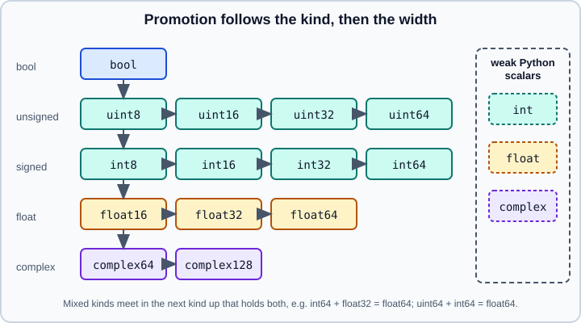

Type Promotion (NEP 50)
|
This content was generated with the assistance of AI and should be verified against the official documentation before being relied on in production. |
When an operation receives operands of different dtypes, NumPy must decide the dtype of the result. That decision is called
type promotion, and in NumPy 2 it follows NEP 50: the result depends only on the types of the operands, never on
the values they hold, and Python numbers are treated as "weak". This page explains the rules, the lookup tools
np.result_type and np.promote_types, and the behaviour that changed from NumPy 1.x. It targets NumPy 2.5 (2.5.4 was
current in October 2026). Examples target Python 3.13 or 3.14 and were run on Python 3.13.
The types themselves are described in Data Types. Promotion applies to every
operation that combines arrays: arithmetic and other universal functions,
concatenate and stack, np.where and assignment of mixed results.
Shape alignment, a separate step, is covered in Broadcasting.
The two ideas of NEP 50
-
Python scalars are weak. A Python
int,floatorcomplextakes the dtype of the other operand when it can, and only contributes its kind (integer, float, complex). -
NumPy scalars and arrays are strong, whatever their shape. A 0-d array and an
np.float64(1)take part in promotion with their full dtype, exactly like a large array.
Values never matter. In NumPy 1.x a small value could change the result type (the magnitude of scalars and 0-d arrays was inspected); NumPy 2 removed that value-based logic. The old behaviour could be switched on in NumPy 1.24 to 2.1 with an environment variable; that escape hatch was removed in NumPy 2.2.
import numpy as np
print(np.float32(3) + 3.0, (np.float32(3) + 3.0).dtype) # weak Python float: stays float32
print((np.uint8(1) + 2).dtype) # weak Python int: stays uint8
print((np.array([1], np.uint8) + 2).dtype) # same for arrays
print((np.float32(3) + np.float64(3)).dtype) # NumPy scalars are strong: float64Output:
6.0 float32 uint8 uint8 float64
Promotion between NumPy types
Between two NumPy dtypes the result is the smallest type that can hold both, following the hierarchy below. Within a kind the wider type wins. Across kinds the result moves to the next kind that holds both operands.

print((np.int8(1) + np.uint8(1)).dtype) # int16: the smallest signed type holding both
print((np.int64(1) + np.uint64(1)).dtype) # float64: no integer holds both
print((np.int8(1) + np.float16(1)).dtype) # float16
print((np.int16(1) + np.float16(1)).dtype) # float32
print((np.int32(1) + np.float32(1)).dtype) # float64
print((np.int64(1) + np.float32(1)).dtype) # float64
print((np.array([1, 2]) * np.float32(1.5)).dtype)
print((np.array([True]) + 1).dtype, (np.array([True]) + 1.0).dtype)Output:
int16 float64 float16 float32 float64 float64 float64 int64 float64
Three results deserve attention.
-
Signed with unsigned moves to a wider signed type, and
int64withuint64falls tofloat64, which cannot hold all 64-bit integers exactly. -
Integer with float chooses a float wide enough for the integer:
int16fitsfloat32,int32needsfloat64, andint64needsfloat64although it cannot hold everyint64exactly. -
Integer arrays times a
float32scalar givefloat64when the array isint64, because the array is strong. The scalar does not shrink the result.
The mixed-kind results explain a common source of unintended memory growth: a float32 array multiplied by an int64 array
becomes float64.
Weak Python scalars in detail
The rule for a Python scalar is: if its kind is not higher than the array’s kind, the result keeps the array dtype; if it is higher, the result is the default type of the scalar’s kind.
print((np.array([1.5], np.float32) * 2.0).dtype) # float kind not higher: float32
print((np.array([1], np.int8) * 2.5).dtype) # float kind is higher: float64
print((np.array([1], np.float16) + 1j).dtype) # complex is higher: complex64
print((np.array([1, 2], np.int32) + True).dtype) # bool is lower: int32
print((np.arange(3, dtype=np.float32) / 3).dtype)
print((np.arange(3, dtype=np.int8) / 3).dtype, (np.arange(3, dtype=np.int8) // 3).dtype)Output:
float32 float64 complex64 int32 float32 float64 int8
Note how a Python float with an int8 array produces float64, the default float, not the smallest float that fits. True
division / of integers always yields a float; floor division // keeps the integer type.
Out-of-range Python integers raise
A weak Python integer must be representable in the other operand’s dtype. If it is not, NumPy raises OverflowError
instead of silently wrapping or upcasting. This is a deliberate change from NumPy 1.x.
import warnings
for expr in ("np.int8(1) + 1000", "np.array([1], np.int8) + 1000", "np.uint8(1) - 2"):
try:
with warnings.catch_warnings(record=True) as w:
warnings.simplefilter("always")
r = eval(expr)
print(expr, "->", repr(r), [str(m.message) for m in w])
except Exception as e:
print(expr, type(e).__name__, e)Output:
np.int8(1) + 1000 OverflowError Python integer 1000 out of bounds for int8 np.array([1], np.int8) + 1000 OverflowError Python integer 1000 out of bounds for int8 np.uint8(1) - 2 -> np.uint8(255) ['overflow encountered in scalar subtract']
The last line shows that a value that fits (2) is accepted, and the arithmetic then wraps, with a warning for scalars and
silently for arrays. To keep large values, convert the operand first: arr.astype(np.int32) + 1000, or add a NumPy scalar of
a wider type.
a = np.array([1, 2, 3], dtype=np.int8)
print((a * 100).dtype, a * 100) # stays int8 and wraps
print((a * np.int64(100)).dtype) # strong NumPy scalar: int64
print(np.add(np.array([200], np.uint8), 100)) # [44]: wraps silentlyOutput:
int8 [100 -56 44] int64 [44]
A related effect with floats: a Python float against a float32 array stays float32, so comparisons are made at single
precision.
print(np.array([0.1], np.float32) == 0.1) # [ True]: 0.1 rounded to float32
print(np.array([0.1], np.float32)[0] == np.float32(0.1)) # True
print(np.float32(16777216) + 1, np.float64(np.float32(16777216)) + 1)Output:
[ True] True 1.6777216e+07 16777217.0
The lookup tools
np.result_type(*arrays_and_dtypes) returns the dtype an operation would produce, and understands weak Python scalars.
np.promote_types(a, b) combines exactly two dtypes. np.can_cast and np.min_scalar_type answer related questions.
print(np.result_type(np.int8, np.uint8), np.result_type(np.float32, 3.0), np.result_type(np.float32, np.float64))
print(np.result_type(np.uint8, 2), np.result_type(np.int64, np.uint64), np.result_type("U3", "U5"))
print(np.promote_types("i4", "f4"), np.promote_types("i8", "f8"), np.promote_types("S3", "U2"))
print(np.promote_types("M8[s]", "M8[D]"), np.promote_types(np.bool, np.int8))
print(np.min_scalar_type(300), np.min_scalar_type(-1), np.min_scalar_type(1.5), np.min_scalar_type(1e40))
try:
np.promote_types("M8[D]", "i8")
except Exception as e:
print(type(e).__name__)Output:
int16 float32 float64 uint8 float64 <U5 float64 float64 <U3 datetime64[s] int8 uint16 int8 float16 float64 DTypePromotionError
np.result_type(np.int8, 1000) reports int8 because the lookup only considers the kind of a Python scalar; the overflow is
detected when the operation actually runs. DTypePromotionError (a subclass of TypeError) is raised for combinations with
no common dtype, such as dates and integers.
np.find_common_type, np.cast and the value-dependent np.min_scalar_type tricks used in older code are gone or no longer
affect promotion: find_common_type was removed in NumPy 2.0; use result_type or promote_types.
Promotion in other operations
-
np.concatenate,np.stack,np.hstack: the result is the promoted dtype of all inputs (int8withfloat32givesfloat32). Passdtype=andcasting=to control it. -
Mixed data in
np.array([...]): a list of ints and floats becomesfloat64, ints and complex numberscomplex128, and a string anywhere turns everything into a fixed-width string:np.array([1, 2.5, "x"]).dtypeis<U32. -
np.where(cond, x, y):xandyare promoted together, with weak Python scalars as above. -
In-place operators such as
a += bcast the result back toa.dtypeunder the"same_kind"rule, soint_array += 1.5raisesUFuncTypeError, andfloat32_array += float64_arrayis allowed. -
Math ufuncs convert small integers to the smallest float that holds them:
np.sqrtonint8givesfloat16, onint16givesfloat32and onint32givesfloat64.
print(np.array([1, 2.5, "x"]).dtype, np.array([1, 1 + 1j]).dtype, np.array([1, True]).dtype)
print(np.concatenate([np.array([1], np.int8), np.array([1.0], np.float32)]).dtype)
print(np.where(True, np.float32(1), 2.0).dtype, np.where(np.array([True]), np.float32(1), np.float64(2)).dtype)
print(np.sqrt(np.int8(4)).dtype, np.sqrt(np.int16(4)).dtype, np.sqrt(np.int32(4)).dtype)Output:
<U32 complex128 int64 float32 float32 float64 float16 float32 float64
What changed from NumPy 1.x
| Expression | NumPy 1.x | NumPy 2.x (NEP 50) |
|---|---|---|
|
|
|
|
|
|
|
|
|
|
|
|
|
|
|
The first four rows are the headline changes of NumPy 2.0. The 1.x column describes the documented NumPy 1.x behaviour
that NEP 50 replaces: value-based when a Python or NumPy scalar (or a 0-d array) met an array, and plain type-based when
every operand was a scalar or 0-d array. Code written for NumPy 1.x that relied on scalars upcasting a small array may now
keep a narrower dtype or raise, and code that relied on 0-d arrays being weak now produces wider types. Test numerical pipelines (image
processing in uint8, mixed precision in float32) after upgrading; the migration checklist is in
Migrating to NumPy 2.x.
Practical rules
-
Keep a pipeline in one float dtype; convert once at the boundary with
astype. -
When mixing narrow integers with larger numbers, convert explicitly (
arr.astype(np.int32)) before arithmetic. -
Use
np.result_typein library code that must return a predictable dtype, and cover both Python and NumPy scalars in tests. -
Check
.dtypeafterconcatenate,whereand reductions: reductions of small integers are promoted to the platform integer (np.array([1, 2], dtype="int8").sum().dtypeisint64), unlike elementwise operations. -
Treat
OverflowErrorfrom a Python integer as a bug in the data or the dtype choice, not as noise.
Common pitfalls
-
Assuming a Python scalar upcasts the array (it never does when its kind is not higher).
-
Expecting 0-d arrays to be weak (they are strong under NEP 50).
-
Mixing
float32arrays withfloat64arrays or scalars, silently doubling memory. -
int64plusuint64producingfloat64and losing precision on large IDs. -
Comparing
float32data with Python floats and relying on exact equality.
References
-
NEP 50, promotion rules for Python scalars: https://numpy.org/neps/nep-0050-scalar-promotion.html
-
NumPy reference, promotion rules: https://numpy.org/doc/stable/reference/arrays.promotion.html
-
numpy.result_type: https://numpy.org/doc/stable/reference/generated/numpy.result_type.html -
numpy.promote_types: https://numpy.org/doc/stable/reference/generated/numpy.promote_types.html -
NumPy 2.0 migration guide: https://numpy.org/doc/stable/numpy_2_0_migration_guide.html